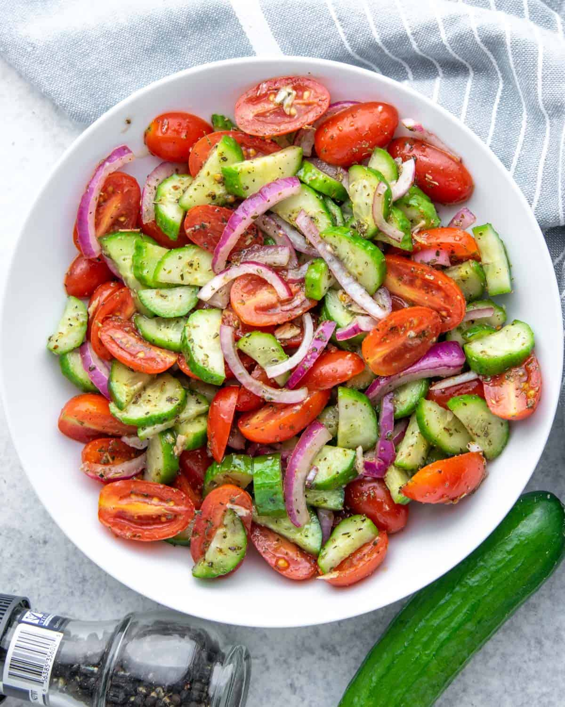

Tomato Salad

Description
This tomato salad is a delicious salad that can be eaten at any time
Now that tomatoes are in season, this is an excellent recipe to try
Ingredients
- 2 Large Tomatoes
- 1/2 Sweet Onion
1 Kirby Cucumber
- 3 Cherry Sized Mozzarella
- 1/2 Cup Fresh Basil
- 2 Tsp Balsamic Vinegar
- 2 Tsp Olive Oil
Steps
- Roughly chop the large onions, sweet onions, kirby cucumbers, and mozzarella
- Mix them in a bowl and then add the vinegar and olive oil
- Finally, tear the fresh basil by hand and enjoy